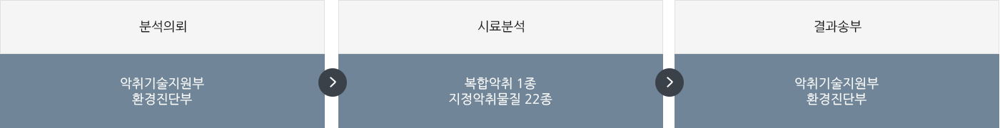

악취관리
공공환경시설 악취기술진단
악취배출사업장 기술지원
악취물질 측정·분석
「하수도법」제2조제9호에 따른 공공하수처리시설 중 1일 하수처리용량 5백세제곱미터 이상인 시설
「하수도법」제2조제11호에 따른 분뇨처리시설
「물환경보전법」제2조제17호에 따른 공공폐수처리시설
「가축분뇨의 관리 및 이용에 관한 법률」제2조제9호에 따른 공공처리시설
「폐기물관리법」제2조제8호에 따른 폐기물처리시설 중 음식물류 폐기물을 처리(재활용을 포함한다)하는 시설
「악취방지법」 제16조의제2제1항제1호에 따른 공공하수처리시설 및 분뇨처리시설에서 발생하는 찌꺼기(슬러지)를 처리하는 공공환경시설(생활폐기물 소각시설 제외)
「악취방지법」 제16조의제2제1항제4호에 따른 음식물류폐기물처리시설(재활용을 포함)에서 발생하는 수질오염물질을 처리하는 공공환경시설

처리시설 일반현황 조사 : 민원발생 현황, 기상조건, 처리대상 물질 등 조사
시설 운영 및 공정 진단 : 시설의 밀폐도 · 악취포집 상태 진단, 악취방지시설 성능 및 효율 진단
처리시설 개선대책 및 악취관리 최적화 방안 도출 : 시설의 악취발생 문제점 및 저감 대책 수립
| 구 분 | 연도별 추진실적(개소) | 비 고 | |||||
|---|---|---|---|---|---|---|---|
| 2018년 이전 | 2019년 | 2020년 | 2021년 | 2022년 | 2023년 | ||
| 공공환경시설 | 1062 | 173 | 164 | 164 | 167 | 164 | |
진단기관 : 한국환경공단
주 소 : 인천광역시 서구 서곶로 543 살리텍빌딩 2층(검암동 596-1) 한국환경공단 기후대기본부 대기환경처 악취기술지원부(우 22695)
연락처 : 032-570-1723 (Fax : 032-570-1740)
신청방법 : 한국환경공단 대기환경처 악취기술지원부로 진단신청 공문 제출(진단신청서, 환경오염물질 처리계통도)
악취방지법 제21조(악취기술지원)에 따라 악취관리에 어려움을 겪고 있는 중소 사업장 및 축산농가 등에 대한 기술지원으로 악취취약사업장의 악취관리능력 제고 및 사업장 주변의 환경개선
신청대상 : 악취방지법시행령 제8조의2(악취저감기술 지원의 대상 및 절차) (공공환경시설은 악취기술진단 대상임)
중소기업중 악취배출시설을 설치한 사업장. 지방자치단체의 장이 악취저감기술 지원을 요청한 사업장
그밖에 환경부장관이 악취관리를 위하여 특별한 조치가 필요하다고 인정하는 사업장
기술지원비용 : 컨설팅 및 측정분석비용 무상지원
악취배출공정 및 방지시설 운영실태 파악
악취원인물질 조사 및 측정분석
악취방지대책 제시 및 사후관리
악취관련 정보제공 및 사업장 애로사항 상담
악취원인물질 저감으로 사업장 환경개선 도모 및 생산성 향상
악취배출시설 및 악취방지시설 운영능력 제고로 대기질개선 및 민원예방
악취방지시설 유지관리 및 시설설치 비용 절감
신청기간 : 연중실시
지자체 : 개별사업장 신청서 취합후 전자문서(공문) 신청
사업장 : 신청서 및 중소기업확인서 첨부 후 이메일 또는 팩스 신청
이메일신청 : odorcenter@keco.or.kr
문의전화 : 032)570-1725 / 팩스신청 : 032)570-1740
- 사업장 담당자 상담
- 원료 및 공정 등 일반현황 파악
- 악취민원 발생 조사 및 사업장 애로사항 청취
- 악취배출현황 파악
- 악취배출공정 조사 및 악취발생원인 확인
- 배기시설 점검
- 설계사양 및 운영현황 파악
- 적정 가동여부 점검 및 악취포집현황조사
- 악취방지시설 점검
- 설계사양 및 운영현황 파악
- 적정 가동여부 점검 및 악취처리현황조사
- 악취물질측정
- 시료채취지점 선정 및 악취물질 측정(복합악취 및 지정악취물질)
- 저감방안 제시
- 문제점 제시 및 악취저감을 위한 종합적인 대책제안
- 악취기술지원 보고서 사업장 제공
공공환경시설 악취진단 및 악취배출사업장 맞춤형 기술지원 악취물질 측정·분석
환경기초시설의 검사진단 및 연구개발 등에 관한 악취물질 측정·분석
국가 및 지방자치단체의 환경기술진단 시료 악취물질 측정·분석
악취방지법 제18조(악취검사기관)
국립환경과학원 공고 제2019-304호(악취검사기관 지정)
환경분야 시험·검사 등에 관한 법률 제6조에 따른「악취공정시험기준」적용
환경분야 시험·검사 업무처리규정 별표2 적용
복합악취물질 : 「공기희석관능법」에 따라 사람의 후각을 이용하여 직접 냄새를 측정하는 시험법
지정악취물질 : 지정악취물질 22종을 정량하기 위한 측정·분석장비를 이용한 「기기분석법」
| 구분 | 분석 대상 항목 | |
|---|---|---|
| 복합악취 | 복합악취 | |
| 지정악취 (22종) |
암모니아 (1종) |
암모니아 |
| 트리메틸아민 (1종) |
트리메틸아민 | |
| 황화합물 (4종) |
황화수소, 메틸메르캅탄, 다이메틸설파이드, 다이메틸다이설파이드 | |
| 지방산 (4종) |
프로피온산, n-뷰틸산, n-발레르산, i-발레르산 | |
| 알데하이드 (5종) |
아세트알데하이드, 프로피온알데하이드, 뷰틸알데하이드, n-발레르알데하이드, i-발레르알데하이드 | |
| 휘발성유기화합물 (7종) |
스타일렌, 톨루엔, 자일렌, 메틸에틸케톤, 메틸아이소뷰틸케톤, 뷰틸아세테이트, i-뷰틸알코올 | |
◎ 업무처리절차도
